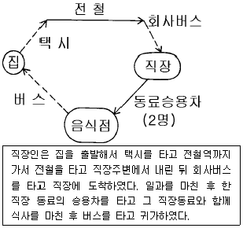
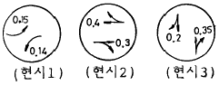
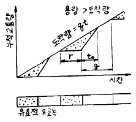
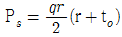
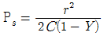
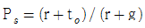
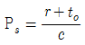
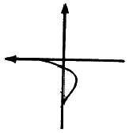

교통기사 (2003-08-31 기출문제)
1과목: 교통계획
1. P요소법(Parking space factor method)으로 도심 주차수요를 추정할 때 다음 중 필요하지 않은 자료는?
- 승용차 이용 출발통행량
- 주간의 통행 집중율
- 주차장 이용 효율
- 승용차 평균 승차인원
(정답률: 알수없음)

2. 모집단의 개체가 똑같은 확률로 뽑혀지도록 모집단에서 추출하는 방법은?
- 단순확률 표본 설계
- 층화확률 표본 설계
- 집락확률 표본 설계
- 비확률 표본 설계
(정답률: 알수없음)
3. 도시의 골격을 형성하고 도시내 장거리 주행이라는 기능을 갖는 도로는?
- 주간선 도로
- 집분산 도로
- 지구내 도로
- 고속 도로
(정답률: 알수없음)
4. TSM기법중 교통수요 관리 기법이 아닌 것은?
- Park and Ride
- 도심통행료 부과
- 출퇴근 시간 조정
- 주차장 신설
(정답률: 알수없음)
5. 교통계획사업평가의 경제성 분석기법중의 하나로서 할인율을 이용하여 이것이 사회적 기회비용보다 높으면 사업의 수익성이 있다고 보는 기법은?
- B/C
- NPV
- FYBCR
- IRR
(정답률: 알수없음)
6. 버스(B)와 지하철(S)간의 선택행태를 분석하고자 자료를 수집하여 계산한 결과, UB(버스의 효용함수)는 –0.18, US(지하철의 효용함수)는 -1.15가 산출되었다. Logit모형을 이용하여 각 교통수단의 선택할 확률을 구한 값은?
- PB = 0.55, PS = 0.45
- PB = 0.72, PS = 0.28
- PB = 0.86, PS = 0.14
- PB = 0.91, PS = 0.09
(정답률: 알수없음)
7. 다음 중 통행발생 단계에서 사용되는 모형이 아닌 것은?
- 카테고리분석법
- 디트로이트분석법
- 원단위분석법
- 회귀분석법
(정답률: 알수없음)
8. 통행발생량(Trip Generation)을 추정하기 위하여 각 변수를 이용하여 여러 회귀식을 만든 경우 적정 회귀식을 선택하는 방법으로 옳은 것은?
- 종속변수를 설명하는 독립변수의 숫자가 많은 것을 선택한다.
- 결정계수(coefficient of determination ; R2)가 0에 가까운 회귀식을 선택한다.
- 가능한 상수항의 값이 작은 회귀식을 선택한다.
- 종속변수와 독립변수간의 부호가 적정한 회귀식을 선택한다.
(정답률: 알수없음)
9. 통행배분(Trip Assignment)을 위하여 사용되는 자료가 아닌 것은?
- 도로 구간별 건설비
- 도로 구간별 통행시간
- 도로 구간별 도로용량
- 기종점 통행량
(정답률: 알수없음)
10. 자동차에 사람이나 화물을 실은채 철도로 운반하는 시스템은?
- Car Ferry 시스템
- Piggyback 시스템
- Dual-mode Bus시스템
- Container 시스템
(정답률: 알수없음)
11. 교통계획을 위한 현황자료 조사에서 인구, 소득, 자동차 보유대수, 직업별 고용자수, 학생수등 사회경제지표를 조사하는데 그 용도로서 거리가 먼 것은?
- 교통투자사업의 재원확보 평가지표로 활용
- 통행발생의 설명변수로 활용
- 표본조사 결과의 전수화를 위한 총량지표로 활용
- 토지이용계획 대안의 수립과 인구고용 기회의 배분을 위한 기초자료로 활용
(정답률: 알수없음)
12. 교통수단의 특성에 따른 통행자의 선택이 아니라 사회, 경제변수에 따라 선택패턴이 결정되며, 통행분포단계보다 앞서 적용되는 교통수단선택모형은?
- 통행단모형
- UMODEL형
- UMTA모형
- 통행교차모형
(정답률: 알수없음)
13. 노선배정시 링크(link)에 관한 자료로 적합하지 않는 것은?
- 용량
- 배차간격
- 길이
- 통행속도
(정답률: 알수없음)
14. 조사대상지역 밖에 출발지 혹은 목적지를 가진 통행을 조사하기 위해서 실시하는 조사방법은 무엇인가?
- 폐쇄선조사
- 스크린라인조사
- 차량번호판조사
- 가구방문조사
(정답률: 알수없음)
15. 다음 한 직장인의 하루 생활동안에 발생시킨 목적 통행수는 얼마인가?

- 6
- 5
- 4
- 3
(정답률: 알수없음)
16. 중력모형(gravity model)의 정산과정 및 예측에 투입되어야 할 자료로서 적합하지 않는 것은?
- 목표년도의 노선배정 통행량
- 목표년도의 존별 유입통행량과 유출통행량
- 기준년도의 기종점간 통행량
- 기준년도의 존간 통행시간
(정답률: 알수없음)
17. 교통수요예측기법 중 집계형모형의 변수로 사용 되는 것은?
- 개인의 통행수
- 개인의 목적수
- 가구의 이용수단
- 평균 가구특성
(정답률: 알수없음)
18. 어느 도시에서 한 방향 노선길이가 20km인 버스노선을 왕복운행속도 20km/h, 배차간격 10분으로 운행하고자 한다. 이 노선의 운행을 위한 최소필요 버스대수는?
- 6대
- 8대
- 10대
- 12대
(정답률: 알수없음)
19. 다음에 열거한 차량검지기중 도로면 밑에 매설하여 설치하여야 하는 검지기는?
- Loop coil식
- Doppler식
- Radar식
- Laser식
(정답률: 알수없음)
20. 도시 전체면적은 600㎞2이며, 가구수가 400만이고 승용차수가 100만대이며, 인구가 1,100만인 도시의 도시통행계수(UTF : Urban Travel Factor)값은?
- 61.5
- 50.2
- 31.3
- 73.3
(정답률: 알수없음)
2과목: 교통공학
21. 한 도로구간의 밀도가 45대/km였다. Greenshields 모형의 직선관계식을 사용하여 속도를 구하면? (단, 자유속도는 100km/h, 혼잡밀도는 150대/km임)
- 30km/h
- 49km/h
- 62km/h
- 70km/h
(정답률: 알수없음)
22. 다음 중 용량보정계수에 포함되지 않는 것은?
- 대형차 혼입율
- 차로수
- 측방여유폭
- 종단구배
(정답률: 알수없음)
23. 도시 간선도로의 어떤 구간에 대한 통행시간(Travel Time)을 결정하는 식은 다음 중 어느것인가?
- 정지지체시간 + 순행시간
- 접근지체시간 + 순행시간
- 정지지체시간 + 가.감속시간
- 정지지체시간 + 접근지체시간
(정답률: 알수없음)
24. 지점 측정법을 이용하여 평균속도를 측정하였다. 이 평균 속도를 사용할 수 없는 경우는?
- 서비스 수준분석
- 사고조사
- 황색신호시간계산
- 속도제한구역설정
(정답률: 알수없음)
25. 신호교차로에서 증가하는 교통량에 대비하여 3현시 신호를 운영할 계획이 있다. 다음 그림과 같이 각 접근로별 V/S비를 구했을 때, 이 신호교차로에서 사용되어 질 수 있는 최소한의 주기는 얼마인가? (단, 손실시간을 현시당 4초로 가정하라.)

- 90초
- 100초
- 110초
- 120초
(정답률: 알수없음)
26. 다음 중 교통감응 신호의 장점이 아닌 것은?
- 신호 연동화가 용이하다.
- 인력에 의한 교통량 조사가 필요없다.
- 단시간내에 교통량 변동에 적응할 수 있다.
- 차량검지기의 설치 및 관리가 용이하다.
(정답률: 알수없음)
27. 어떤 신호교차로에 도착하는 차량들이 다음과 같을 때 차량군비는 얼마인가? (단, 녹색시간 30초동안 20대차량이 도착하고 적색시간 26초 동안에는 15대가 도착하며 총 신호주기 60초 동안에 는 40대가 도착한다.)
- 1.0
- 1.5
- 2.0
- 3.2
(정답률: 알수없음)
28. 다음 중 고속도로 기본구간의 서비스 수준을 정의하기 위하여 사용되는 효과척도는?
- 밀도
- 평균통행속도
- 교통량
- 지체시간
(정답률: 91%)
29. 다음 중 신호시간계획에 의해 결정되는 변수가 아닌 것은?
- 주기길이
- 현시순서
- 지체시간
- 현시분할
(정답률: 알수없음)
30. 다음 그림은 신호 교차로에서 대기 행렬모형을 나타낸 것이다. 정지하는 차량의 비율을 나타낸 것으로 옳은 것은?





(정답률: 알수없음)
31. 도착하는 차량들의 시간간격을 분석할 때 적합하지 않는 확률 분포는?
- 지수분포
- 감마분포
- 카이제곱분포
- 포아송분포
(정답률: 알수없음)
32. 속도 조사시 유의하여야 할 사항이 아닌 것은?
- 속도조사 행위가 인근 사람에게 띄어 구경꾼이 모여 들지 않도록 한다.
- 속도조사에 이용되는 장비는 접근하는 운전자에게 보이지 않도록 해야 한다.
- 주로 속도가 높은 차량을 조사대상으로 한다.
- 관찰자가 운전자에게 띄이지 않도록 몸을 최대한 숨겨야 한다.
(정답률: 알수없음)
33. 어떤 특정한 법칙없이 T형 교차로의 한 방향에 도착하는 차량의 70%가 좌회전하고 나머지는 우회전 한다고 한다. 10대의 차량이 한 방향에 도착했을때 정확히 3대가 우회전할 확률은 얼마인가?
- 0.009
- 0.267
- 0.367
- 0.454
(정답률: 알수없음)
34. 다음 중 양방향정지 비신호교차로의 서비스수준 분석을 위한 효과척도로 사용하는 값은?
- 방향별 교차로 진입교통량
- 평균제어지체
- 시간당 상충횟수
- 평균운영지체
(정답률: 알수없음)
35. 포화교통유율(saturation flow-rate)은 포화용량이라고도 한다. 다음 중 포화용량(s)과 포화차두시간(h)과의 관계식으로 옳은 것은?
- h = s/3600
- s = 100/h
- h = 1000/s
- s = 3600/h
(정답률: 알수없음)
36. 교통류내에서의 운행상태를 분류하는 기준으로 서비스수준을 사용한다. A∼F까지 6개 서비스수준 중 도로의 용량에 거의 도달한 상태를 나타내는 것은?
- C
- D
- E
- F
(정답률: 알수없음)
37. 도류화의 설명 중에서 옳지 않은 것은?
- 차량이 합류, 분류 및 교차하는 위치와 각도를 조정한다.
- 차량의 속도를 바람직한 정도로 조절한다.
- 분리된 회전차로는 회전차량이 직진차로를 뚫고 지나가도록 한다.
- 차량이 진행해야 할 경로를 명확히 알려 준다.
(정답률: 알수없음)
38. 다음 중 전통적인 car-following 모형에서 한 운전자의 가속에 영향을 미치는 요소들에 포함되지 않는 것은?
- 앞차와의 속도차
- 속도차에 대한 반응민감도
- 앞차와의 간격
- 차체의 크기
(정답률: 알수없음)
39. 차량이 시속 60km로 주행하다가 300m를 주행하고 정지하였다고 하면 감속율은?
- 0.41 m/sec2
- 0.46 m/sec2
- 0.51 m/sec2
- 0.56 m/sec2
(정답률: 알수없음)
40. 한 가로의 첨두시간 교통량이 1500대/시간, 이 첨두시간 중 15분간의 최대교통량이 450대이었다. 이 가로의 첨두시간 계수(peak-hour factor)는?
- 0.78
- 0.83
- 0.88
- 0.93
(정답률: 알수없음)
3과목: 교통시설
41. 다음 그림의 연결로는 어떤 형식인가?

- 준직결식(semi-direct)
- 직결식(direct)
- 루프식(loop)
- 4분원식(one quadrant)
(정답률: 알수없음)
42. 옥내 주차장에 대한 설명으로 옳은 것은?
- 입구차로수는 출구차로수의 2배로 하는 것이 바람직하다.
- 아래위층을 연결하는 일반적인 램프의 최대설계용량은 차로당 150vph이다.
- 옥내주차장은 램프식, 경사바닥식, 기계식으로 분류할 수 있으며, 지가가 싸고 넓은 장소에서는 기계식으로 운영하는 것이 경제적이다.
- 1시간 이내 완전히 채우거나 비울 수 있어야 한다.
(정답률: 알수없음)
43. 도시부도로에 있어서 자동차의 정차로 인한 차량의 통행장애를 방지하기 위하여 필요하다고 인정하는 경우에는 차도의 우측에 정차대를 설치하여야 하는데 정차대 폭의 표준은 얼마인가?
- 2.5m
- 3.5m
- 4.5m
- 5.0m
(정답률: 알수없음)
44. 정지시거의 기준인 운전자의 눈 높이와 물체의 높이는 각각 얼마인가?
- 1.0m, 15cm
- 1.2m, 10cm
- 1.1m, 12cm
- 1.2m, 15cm
(정답률: 알수없음)
45. 비신호 교차로의 경우 좌회전 차로의 대기차량을 위한 길이의 기준으로 옳은 것은?
- 첨두시간 평균 1분간 도착하는 좌회전 교통량
- 첨두시간 평균 2분간 도착하는 좌회전 교통량
- 첨두시간 평균 3분간 도착하는 좌회전 교통량
- 첨두시간 평균 5분간 도착하는 좌회전 교통량
(정답률: 알수없음)
46. 주차원단위법의 종류에 해당되지 않는 것은?
- 건물연면적 원단위법
- 교통량 원단위법
- 주차발생 원단위법
- 누적주차 원단위법
(정답률: 알수없음)
47. +4% 와 -2% 구배를 갖는 도로부 사이를 800m의 종단곡선으로 연결하였다. 이 종단 곡선의 시작부 표고가 100.00m라고 하면 곡선의 시작부에서 500m 떨어진 지점의 표고는 얼마인가? (단, 곡선 시작부는 +4% 구배상에 있다.)
- 100m
- 110m
- 120m
- 130m
(정답률: 알수없음)
48. Park and Ride 주차시설을 옳게 설명한 것은?
- 공원이나 유원지에서 입장료를 낸 사람에게 개방된 주차장
- 대중 교통 연계지점에 건설된 주차장으로 이곳에 승용차를 주차시킨 후 대중 교통으로 갈아 타게 하기 위해서 만든 주차장
- 전철이나 지하철역에 건설된 주차장으로 역세권 개발을 위해 만들어진 것
- 공원내에서 공원내를 운행하는 셔틀버스에 갈아타기 위해 만든 주차장
(정답률: 알수없음)
49. 비상주차대의 설치 간격은 고속도로인 경우 얼마를 표준으로 하는가?
- 300m
- 550m
- 750m
- 900m
(정답률: 알수없음)
50. 연결로 형식중 교통용량이 가장 적은 형식은?
- 우직결연결로
- 준직결연결로
- 좌직결연결로
- 루프연결로
(정답률: 알수없음)
51. 인터체인지간의 최소거리는?
- 5.5km
- 3.5km
- 2.0km
- 500m
(정답률: 알수없음)
52. K(설계시간 계수)값의 일반적인 경향으로 옳은 것은?
- 년평균일 교통량이 많은 도로일수록 K값은 작다.
- 도시부도로나 간선도로의 성격이 강한 도로일수록 K값은 크다.
- 인구밀도가 낮은 지방부도로에서는 K값이 작다.
- 교통량의 계절적 변동이 큰 도로에서는 K값은 작다.
(정답률: 알수없음)
53. 완화곡선에 있어서 속도가 일정할 때 원심가속도 변화율과 파라메타에는 어떠한 관계가 있는가?
- 원심가속도 변화율에 상관없이 파라메타는 일정하다.
- 원심가속도 변화율이 커지면 파라메타는 비례하여 커진다.
- 원심가속도 변화율이 커지면 파라메타는 반비례하여 적어진다.
- 원심가속도 변화율에 상관없이 파라메타는 커지기도 하고, 적어지기도 한다.
(정답률: 알수없음)
54. 교통량이 적은 가로부에 길이 100m에 걸쳐서 평행식 노상주차장을 설치하려 한다. 몇 대가 주차 가능한가? (단, 100m 중에 횡단보도 등 노상주차장이 단절되는 부분이 없는 것으로 가정한다.)
- 15대
- 18대
- 20대
- 28대
(정답률: 알수없음)
55. 평면교차로에서 도류화의 설치목적에 관한 설명으로 틀린 것은?
- 차량이 합류, 분류 및 교차하는 위치와 각도를 조정한다.
- 차량이 진행해야 할 경로를 명확히 하고 주된 이동류에 우선권을 제공한다.
- 보행자 안전지대 설치장소와 교통통제설비를 잘 보이는 곳에 설치하기 위한 장소를 제공한다.
- 차량간의 상충면적을 넓게 늘려준다.
(정답률: 알수없음)
56. 종단선형에서 볼록종단곡선의 최소길이는 무엇에 따라 통상 결정되는가?
- 곡선반경
- 배수
- 소요시거
- 도로폭
(정답률: 알수없음)
57. 평면교차로의 간격을 결정하는데 중요하지 않는 것은?
- 해당도로 및 접속도로의 기능
- 차로수
- 차량길이
- 설계속도
(정답률: 알수없음)
58. 평면교차로에서 도류로의 폭을 결정하는 요소와 관계가 가장 먼 것은?
- 설계차량
- 곡선반경
- 차로수
- 전향각
(정답률: 알수없음)
59. 완전입체교차의 형식 중 완전클로버잎형의 장점은?
- 엇갈림현상 없음
- 교통용량 증대
- 구조물이 단순하고 시공이 용이
- 고속도로 상호간 교차에 적합
(정답률: 알수없음)
60. 일방통행로의 단점인 것은?
- 통행거리의 증가
- 상충이동류 감소
- 용량 증대
- 평균통행속도 증가
(정답률: 알수없음)
4과목: 도시계획개론
61. 도시공간시설 중 광장에 대한 설명으로 잘못된 것은?
- 광장은 다목적이 되도록 교통시설이 집중하도록 계획한다.
- 도시의 상징적 광장으로서의 계획이 필요하다.
- 광장의 종류에는 교통광장, 경관광장, 지하광장 등이 포함된다.
- 철도교통과 도로교통의 효율적 변환이 가능한 철도역의 전면에는 역전광장을 설치하는 것이 바람직 하다.
(정답률: 알수없음)
62. 어떤 주택단지의 토지이용비율은 주택용지 70%, 교통용지 15%, 공원 녹지등 기타용지15% 이다. 이 주택단지의 총 인구밀도를 175인/㏊로 계획한다면 주택용지에 대한 순인구밀도는?
- 140인/㏊
- 175인/㏊
- 200인/㏊
- 250인/㏊
(정답률: 알수없음)
63. 다음 중 다핵심이론(多核心理論)의 지구분류에 해당되지 않는 것은?
- 하층계급주택지
- 점이지대
- 교외공업지
- 중심업무지구
(정답률: 알수없음)
64. 도로를 규모별로 광로, 대로, 중로, 소로로 구분하고 있다. 이중 광로는 몇 m이상의 도로폭을 지칭하는 것인가?
- 30m
- 40m
- 50m
- 60m
(정답률: 알수없음)
65. 다음 중에서 가장 상위 공간계획은 어느 것인가?
- 국토이용계획
- 국토계획
- 수도권정비계획
- 도시기본계획
(정답률: 알수없음)
66. 재개발구역의 선정기준 중에서 불량도의 정도를 파악하는 방법에 해당되지 않은 것은?
- 유형분류방식
- 요소수방식
- 절충식
- 벌점방식
(정답률: 알수없음)
67. 현대 도시계획의 추세에 대하여 올바르게 설명한 것은?
- 사회· 경제적 여건을 포함하는 종합계획의 성격을 가진다.
- 물리적 계획을 중심으로 설계기법 및 제도를 중시한다.
- 지방자치제의 실시로 인하여 폐쇄적 도시계획 수립방향으로 간다.
- 국토 및 지역계획 등 상위계획과의 조화가 불필요하게 되어간다.
(정답률: 알수없음)
68. 도시인구 50만명이고 취업율 30% 그중 제조업의 종사자는 5만명일 경우, 도시의 제조업 구성비는 얼마인가?
- 12%
- 20%
- 33%
- 40%
(정답률: 알수없음)
69. 격자형 가로망의 특성에 대한 설명으로 틀린 것은?
- 지형이 평탄한 도시에 적합하다.
- 고대 및 중세 봉건도시에서 흔히 볼 수 있다.
- 토지이용상 결함이 있다.
- 도로기능의 다양성이 결여되기 쉽다.
(정답률: 알수없음)
70. "The Image of the city"라는 도시론을 주창한 Kevin Lynch의 환경을 구성하는 Image성분이 아닌 것은?
- 구조(Structure)
- 동일성(Identity)
- 의미(Meaning)
- 상징물(Landmark)
(정답률: 알수없음)
71. 도시계획에 있어서의 장래인구의 예측 방법 중에서 출생, 사망, 전입, 전출, 성비, 가임여성의 생산율, 연령대별 생잔율 등 인구증감의 인과관계를 고려하여 인구를 분석하고 예측하는 방법은 다음 중 어느 것인가?
- 등차급수법
- 집단생잔법
- 비교유추법
- 최소자승법
(정답률: 알수없음)
72. 다음 중 비교유추에 의한 인구추정방법에 대한 설명으로 옳지 않은 것은?
- 과거추세연장법에 의한 장래인구예측이 어려울 때 적용될 수 있다.
- 비교 대상도시는 가능한 인구규모가 계획대상도시보다 다소 작은 도시를 택한다.
- 뚜렷한 기간산업을 찾기 어려워 취업인구에 의한 예측이 곤란할 때에도 유용하게 적용될 수 있다.
- 전국 도시 중 제반 조건이 유사한 도시를 찾아 그 도시의 인구성장과정을 적용하는 방식이다.
(정답률: 알수없음)
73. 장래의 인구 규모측정에 쓰이는 아래의 방식 중 등비급수적 인구추정 공식은? (단, Po : 현재인구, Pn : 기준년도 인구, r : 연평균증가율, a,b : 상수)
- Pn=Po(1+nr)
- Pn=Po(1+r)n
- Pn = Po+bn
- Pn=abn
(정답률: 알수없음)
74. 다음 중 용적율의 개념을 정확히 표현한 것은?
- 건축면적/대지면적
- 공지면적/대지면적
- 연상면적/건축면적
- 연상면적/대지면적
(정답률: 알수없음)
75. 주택단지의 구성에서 다음 3개의 서로 다른 단위를 작은 것부터 큰것으로 배열한 것은?
- 근린분구 → 근린주구 → 인보구
- 인보구 → 근린분구 → 근린주구
- 근린주구 → 근린분구 → 인보구
- 인보구 → 근린주구 → 근린분구
(정답률: 알수없음)
76. 고대 로마시대의 도시에서 새로운 황제가 나타날 때 광장을 중심으로 기념물이나 건물군을 건설한 것은 무엇이라 불리우는가?
- 실체스터(Silchester)
- 포럼(Forum)
- 바실리카(Basilica)
- 아고라(Agora)
(정답률: 80%)
77. 도시내 토지이용에 관한 고전적인 이론들 중에 Burgess의 동심원이론(concentric-zone concept)의 내용에 부합되지 않는 것은?
- 1920년대 초기에 발전된 이론으로 도시내 토지 이용에 있어서 생태학적 진행(ecological process)의 과정을 설명하였다.
- 도시를 완충지대가 포함된 6개의 동심원 구조로 보았다.
- 도시내의 중심에는 loop지역이 있어서 중심 상업업무기능을 담당한다고 보았다.
- 도시의 가장 외곽 지역은愷통근자의 지역이라 하여 중류층 이상의 교외주거지가 형성된다고 하였다.
(정답률: 알수없음)
78. 주거지의 밀도배분 계획시 고밀도로 배치하기에 가장 적합한 지역은?
- 간선도로변 지역
- 자연 경관이 양호한 구릉지역
- 미개발된 도시교외지역
- 역세권 지역
(정답률: 알수없음)
79. 변이 할당분석(shift-share analysis)에서 도출되는 효과 중 적절치 않은 것은?
- 전국 경제성장 효과
- 산업구조 변화 효과
- 지역할당 효과
- 임금구조 조정 효과
(정답률: 알수없음)
80. 사회간접자본에 대하여 제3섹터 혹은 민간회사가 시설을 건설한 후 일정기간동안 소유 및 운영을 하며, 일정기간 경과 후 소유권 및 운영권이 정부에 귀속되는 민간자본투자형태는?
- BOO(Build-Operate-Own)
- BOT(Build-Operate-Transfer)
- BTO(Build-Transfer-Operate)
- BOOT(Build-Own-Operate-Transfer)
(정답률: 알수없음)
5과목: 교통관계법규
81. 도시교통정비촉진법상의 교통수단의 범위에 속하지 않는 것은?
- 승용자동차
- 화물자동차
- 원동기장치자전거
- 특수자동차
(정답률: 알수없음)
82. 우리나라 도로법에 규정된 도로의 종류에 해당되지 않은 것은?
- 고속국도
- 일반국도
- 군도
- 농어촌도로
(정답률: 알수없음)
83. 중앙도시계획위원회에 대한 설명으로 틀린 것은?
- 도시계획에 관한 조사· 연구를 수행하기 위하여 건설교통부에 중앙도시계획위원회를 둔다.
- 중앙도시계획위원회의 위원장 및 부위원장은 위원 중에서 건설교통부장관이 임명 또는 위촉한다.
- 중앙도시계획위원회는 위원장· 부위원장 각 1인을 포함한 10인 이상 20인 이내의 위원으로 구성한다.
- 위원장은 중앙도시계획위원회의 업무를 총괄하며, 중앙도시계획위원회의 의장이 된다.
(정답률: 60%)
84. 다음 중 부설주차장의 설치대상시설물 종류에 따른 설치기준이 틀린 것은?
- 병원 : 시설면적 150m2당 1대
- 호텔 : 시설면적 150m2당 1대
- 백화점 : 시설면적 150m2당 1대
- 방송국 : 시설면적 150m2당 1대
(정답률: 알수없음)
85. 도시교통정비 촉진법의 목적이 아닌 것은?
- 교통수단 및 교통체계를 효율적으로 운영· 관리
- 교통시설의 정비를 촉진
- 도시교통의 원활한 소통과 교통편의의 증진에 이바지
- 교통사고 예방으로 국민의 생명과 재산을 보호
(정답률: 알수없음)
86. 다음중 지방도시교통정책심의위원회의 업무범위에 속하지 않는 것은?
- 중심도시 및 교통권역의 지정에 관한 사항
- 기본계획의 수립· 변경 및 그 시행실적의 평가
- 도시교통의 개선을 위한 명령의 실시계획
- 교통수요관리의 시행에 관한 사항
(정답률: 알수없음)
87. 도시교통의 원활한 소통과 교통시설의 효율적인 이용을 위하여 일정한 지역에서 교통수요관리를 시행할 필요가 있다고 인정될 때 교통수요관리시행을 할 수 있는 자는?
- 국무총리
- 건설교통부장관
- 시장
- 도지사
(정답률: 알수없음)
88. 도시지역의 국지도로인 경우 보도의 최소폭은?
- 1.5m
- 2.0m
- 2.25m
- 3.0m
(정답률: 알수없음)
89. 보행자가 도로를 횡단할 수 있도록 안전표지로서 표시한 도로의 부분은?
- 안전지대
- 보행자용 육교
- 횡단보도
- 길가장자리 구역
(정답률: 알수없음)
90. 지정행정기관의 장이 교통안전진단 결과 취할 수 있는 조치가 아닌 것은?
- 교통안전시설의 개선 또는 사용제한
- 교통안전에 사용되는 장비 또는 차량등의 개선 또는 사용제한
- 종사원의 근무시간등 근무환경의 개선
- 종사원의 교통안전에 관한 교육
(정답률: 알수없음)
91. 도로의 구분에 따른 설계 기준 자동차로 적합하지 않는 것은?
- 고속도로 : 세미트레일러
- 주간선도로 : 대형자동차
- 보조간선도로 : 대형자동차
- 국지도로 : 대형자동차
(정답률: 알수없음)
92. 다음 중 주차 및 정차의 금지 장소가 아닌 곳은?
- 교차로의 가장자리 또는 도로의 모통이로부터 5m이내
- 건널목의 가장자리로부터 10m이내
- 횡단보도로부터 10m이내
- 안전지대의 사방으로부터 20m이내
(정답률: 알수없음)
93. 주차전용건축물이라 함은 건축물의 몇%이상이 주차장으로 쓰여야 주차전용건축물이라고 말할 수 있는가?
- 95%
- 85%
- 75%
- 55%
(정답률: 90%)
94. 다음 중 교통영향평가에 따른 재평가의 사유로 옳은 것은?
- 사업지와 가장 근접한 도로에서의 자동차 평균주행속도가 교통영향평가시의 예측보다 30%이상 감소한 경우
- 사업지와 가장 근접한 도로의 도로용량이 교통영향평가시의 예측보다 20%이상 감소한 경우
- 사업지와 가장 근접한 교차로의 평균지체시간이 교통영향평가시의 예측보다 30%이상 증가된 경우
- 사업지와 가장 근접한 교차로의 교통사고가 교통영향평가시의 예측보다 20%이상 증가된 경우
(정답률: 알수없음)
95. 다음중 도로법상의 도로 부속물에 해당하지 않는 것은?
- 도로원표
- 도로상의 가로등
- 이정표
- 도로터널
(정답률: 알수없음)
96. 다음 중 앞지르기의 개념을 정확히 기술한 것은?
- 차가 앞서가는 차의 후미를 일정한 거리를 두고 따라 가는 것
- 차와 차가 차로를 달리하여 나란히 주행하는 것
- 차가 앞서가는 다른 차의 옆을 지나서 그 차의 앞으로 나가는 것
- 차가 앞서가는 다른 차의 옆을 지나서 운행하는 것
(정답률: 알수없음)
97. 일반적으로 도시관리계획에 의한 지형도면의 고시에 사용되는 도면의 축척은?
- 1/300 - 1/500
- 1/500 - 1/1500
- 1/3000 - 1/8000
- 1/6000 - 1/25000
(정답률: 알수없음)
98. 도로의 구조에 대한 손궤, 미관의 보존 또는 교통에 대한 위험을 방지하기 위한 접도구역은 도로경계선으로부터 몇 미터를 초과하지 않는 범위안에서 지정할 수 있는가?
- 10
- 20
- 30
- 40
(정답률: 알수없음)
99. 지체부자유자를 위한 전용주차장설치요건 중 옳은 것은?
- 주차대수 1대당 폭 3.0m이상, 길이 5.5m이상
- 주차대수 1대당 폭 3.2m이상, 길이 5.5m이상
- 주차대수 1대당 폭 3.0m이상, 길이 5.0m이상
- 주차대수 1대당 폭 3.3m이상, 길이 5.0m이상
(정답률: 알수없음)
100. 교통에 방해되어 제거한 공작물등을 보관한 때에는 그 공작물등을 보관한 날부터 며칠간 그 경찰서의 게시판에 공고하여야 하는가?
- 5일
- 10일
- 14일
- 30일
(정답률: 알수없음)
6과목: 교통안전
101. 한 차량이 30m 거리를 미끄러져 주차한 차량과 충돌하였으며 충돌후 두 차량이 함께 15m를 미끄러져 정지하였다. 두 차량의 무게가 동일할 때 주행차량의 초기속도는? (단, 마찰계수는 0.6으로 가정한다.)
- 101km/hr
- 110km/hr
- 117km/hr
- 127km/hr
(정답률: 알수없음)
102. 도시가로의 안전조치 중 비용-효과성과 안전효율성을 동시에 높게 만족시키는 조치와 거리가 먼 것은?
- 회전차로
- 사고지점의 재포장
- 부러지는 지주
- 차로폭 확장
(정답률: 알수없음)
103. 노변방호책의 높이를 적절히 하지 않으면 차량이 방호책에 부딪치고 나서 방호책 위를 비행하거나 차량타이어가 방호책에 박히게 되어 방호책의 높이는 매우 중요하다. 일반적으로 방호책의 높이로 가장 적당한 것은?
- 0.4 ∼ 0.6m
- 0.7 ∼ 0.8m
- 1.0 ∼ 1.2m
- 1.3 ∼ 1.5m
(정답률: 알수없음)
104. 높은 좌회전교통량으로 인한 교차로에서의 좌회전 충돌사고가 많을 때의 일반적인 대책으로 적절하지 않는 것은?
- 좌회전 신호 현시 부여
- 좌회전 금지
- 연석 회전반경 증가
- 교차로의 도류화
(정답률: 알수없음)
1⑤. 교통사고원인을 분석하면서 교통사고는 충돌전, 충돌중, 충돌후 등의 세가지 사고기회의 궤도를 돌파하여야 비로소 사고로 연결된다고 주장한 사람은?
- Reason
- Rumar
- Hauer
- Haddon
(정답률: 알수없음)
106. 주거지역에서 차량의 높은 속도는 주거환경을 해칠뿐 아니라 어린이 및 보행자 교통사고를 비롯한 심각한 위험요소가 되고 있다. 이들지역의 차량속도를 적정수준으로 유지하기 위해 노면에 돌출부를 설치한 것을 무엇이라 하는가?
- 브레이크 웨이
- 슬립베이스
- 충격쿠션
- 속도범프
(정답률: 92%)
107. 도로가 철도와 평면 교차할 때는 안전 요소인 운전자의 시거 확보를 위하여 일정크기 이상의 교차각(交叉角)을 규정하고 있는데 그 값은 얼마 이상이어야 하는가?
- 30°
- 45°
- 60°
- 75°
(정답률: 알수없음)
108. 한 차량이 연속적으로 20m에 이어 30m의 바퀴자국을 남기고 정지하였을 경우 마찰계수를 0.5라할 때 이 차량의 초기속도는?
- 60㎞/시
- 70㎞/시
- 80㎞/시
- 90㎞/시
(정답률: 알수없음)
109. 한 차량이 도로를 이탈하여 도로의 맨 끝으로부터 수직거리 15m, 수평거리 10m 지점에 추락하였다면 이 차량이 도로를 이탈할 때의 속도는?
- 15.1 kph
- 20.6 kph
- 26.1 kph
- 31.6 kph
(정답률: 알수없음)
110. 물기 있는 도로 주행시 노면과 타이어 사이에 물의 얇은 막이 생겨 주행시 브레이크 기능을 상실하게 되는 현상을 무슨 현상이라 하는가?
- 페드 현상
- 스탠딩 웨이브 현상
- 하이드로 플래닝 현상
- 시미 현상
(정답률: 알수없음)
111. 관성에 의해 시속 50km로 주행중인 무게 2톤의 차량이 무게 1톤의 모래주머니를 충격한 후의 속도는?
- 33.3kph
- 35.8kph
- 38.3kph
- 40.8kph
(정답률: 알수없음)
112. 교통안전대책을 수립하는데 있어 위험지점을 선정할 때 교통량자료가 고려되지 않는 기법은?
- 사고건수법
- 사고율법
- 사고건수-율법
- 율-품질관리법
(정답률: 알수없음)
113. 교통사고의 원인이 되는 미끄러운 노면의 개선대책으로 적절치 않는 것은?
- 노면의 재포장
- 제한속도의 낮춤
- 미끄럼 주의표지설치
- 시야장애제거
(정답률: 알수없음)
114. 구간교통사고 분석을 위해 선정하는 표준구간장으로 권장되는 것은?
- 도시지역 : 0.1km, 지방부 : 1km
- 도시지역 : 0.2km, 지방부 : 2km
- 도시지역 : 0.3km, 지방부 : 3km
- 도시지역 : 0.5km, 지방부 : 5km
(정답률: 알수없음)
115. 인접한 신호교차로의 녹색 시간이 시작하는 시간간의 차이를 무엇이라고 하는가?
- 시간분할(split)
- 현시(phase)
- 옵셋(offset)
- 주기(cycle)
(정답률: 알수없음)
116. 다음 노변방호책 중 충격에 의한 동적처짐이 가장 큰 것은?
- W빔-철재연약지주
- 박스빔
- 케이블 가드레일
- 돌출 W빔
(정답률: 알수없음)
117. 중앙분리대를 설치하여 많이 감소시킬 수 있는 사고의 유형은?
- 측면충돌사고
- 추돌사고
- 직각 및 정면충돌사고
- 전복사고
(정답률: 90%)
118. 개별적 사고분석의 5단계의 순서가 옳은 것은?
- 사고보고 → 선정된 사고에 대한 보충자료의 수집 → 전문적인 재구성 → 기술적 자료준비 → 원인분석
- 사고보고 → 기술적 자료준비 → 선정된 사고에 대한 보충자료의 수집 → 전문적인 재구성 → 원인분석
- 사고보고 → 전문적인 재구성 → 기술적 자료준비 → 선정된 사고에 대한 보충자료의 수집 → 원인분석
- 사고보고 → 선정된 사고에 대한 보충자료의 수집 → 기술적 자료준비 → 전문적인 재구성 → 원인분석
(정답률: 알수없음)
119. 교통안전시설인 중앙방호책의 구성요소로 옳지 않는 것은?
- 표준구간
- 전이구간
- 끝부분
- 완충구간
(정답률: 알수없음)
120. 위험지점을 선정할 때 유사한 특성을 가진 지점들에 대해 미리 정해진 평균사고율과 관련하여 특정사고율이 비정상적인지를 결정하기 위하여 사고발생이 포아송의 분포를 따른다는 가정에 기초한 검정을 통하여 분석하는 방법은?
- 사고율법
- 사고건수법
- 율-품질관리법
- 포아송분포법
(정답률: 91%)